Individual Variable Priority for Precision Insights
Let \(\def\grad{{ \nabla}}\def\x{{\bf x}}\def\xs#1{x^{(#1)}}\psi(\x) = \mathbb{E}(\phi(Y) | \x)\) be the unknown target function for the feature vector \(\x = (\xs{1}, \ldots, \xs{p})^T\), where \(Y\) is the outcome and the choice of \(\phi\) depends on the specific problem
iVarPro defines individual importance as the local gradient: \[ \grad \psi(\x) = \left(\frac{\partial \psi(\x)}{\partial \xs{1}}, \ldots, \frac{\partial \psi(\x)}{\partial \xs{p}}\right)^T := \left(g^{(1)}(\x), \ldots, g^{(p)}(\x)\right)^T \] The values \(g^{(s)}(\x)\) represent the individual variable importance for features \(\xs{s}, s = 1, \ldots, p\)
Intuition: gradient = sensitivity to small changes in \(x^{(s)}\) at this \(\x\)
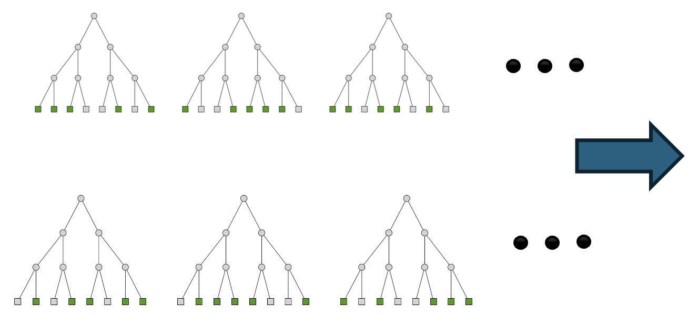
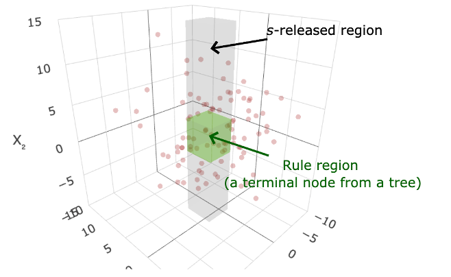
Working theory: when the surface \(\psi(x)\) is smooth locally, these tiny local regressions recover gradients well
The importance of a variable \(s \in \{1, \ldots, p\}\) is assessed by comparing estimates within a rule’s region \(R\) to those in its corresponding release region, defined as the region \(R\) expanded where constraints on \(\xs{s}\) are removed [1]
Let \(\x_0 := \x_0(R)\) denote the centroid of \(R\), and assign its gradient to all cases in \(R\). To define the gradient at \(\x_0 = (x_0^{(1)},\ldots,x_0^{(p)})^T\) along coordinate \(s\), let \(\psi_R^{(s)}(z)\) represent the evaluation of \(\psi\) at \(\x_0\), with the \(s\)-th coordinate perturbed by an increment \(z\): \[ \psi_R^{(s)}(z) = \psi(x_0^{(1)},\ldots,x_0^{(s-1)},x_0^{(s)}+z,x_0^{(s+1)},\ldots,x_0^{(p)}) \] By construction, \(\psi_R^{(s)}(0) = \psi(\x_0)\), and the gradient of \(\psi\) at \(\x_0\) along coordinate \(s\) is formally given by \[ g_R^{(s)} := g_R^{(s)}(\x_0) =\lim_{z\rightarrow 0} \frac{\psi_R^{(s)}(z)-\psi_R^{(s)}(0)}{z} \]
To estimate the gradient, we employ a local linear regression model. In small regions around \(\x_0(R)\) along the coordinate direction \(s\), we approximate \(\psi\) using the linear model: \[ \psi_R^{(s)}(z) = \psi_R^{(s)}(0) + z g_R^{(s)} \] Given training data \((\x_1, y_1),\ldots,(\x_n, y_n)\), we regress \(\{y_i\}\) on the \(s\)-coordinate features \(\{x_i^{(s)}\}\) using an intercept-slope model based on data local to \(R\). The gradient \(g_R^{(s)}\) is estimated using the least squares estimate of the slope
To systematically control the extent of this expansion, we introduce an index \(\scriptsize \def\l{\lambda} \def\psihat{\widehat{\psi}} \def\ghat{\widehat{g}} \def\bhat{\widehat{\beta}} 0 \le \l \le \l_0\) that determines the proportion of individuals selected from the release region \(\scriptsize R^{(s)}\). Larger values of \(\scriptsize \l\) correspond to a greater number of included individuals. The expanded region is then defined as \(\scriptsize R(s,\l) = R \cup R_\l^{(s)}\), where \(\scriptsize R_\l^{(s)}\) is a restricted subset of \(\scriptsize R^{(s)}\) determined by \(\scriptsize \l\)
we center \(\scriptsize x_i^{(s)}\) at the centroid value \(\scriptsize x_0^{(s)}(R)\) and then scale it to have unit length, denoting the transformed values by \(\scriptsize z_i^{(s)}\):
\[ \scriptsize z_i^{(s)} = \frac{x_i^{(s)} - x_0^{(s)}(R)} {\sqrt{\displaystyle\sum_{\x_j\in R(s,\lambda)}(x_j^{(s)} - x_0^{(s)}(R))^2}} %\quad \x_i\in R(s,\lambda) \]
The local gradient is estimated via least squares regression using the data \(\scriptsize \{z_i^{(s)},\psihat(\x_i)\}\) within \(\scriptsize R(s,\lambda)\): \[ \scriptsize \psihat(\x_i) = \alpha_R^{(s)} + z_i^{(s)} \beta_R^{(s)} + \varepsilon_i, \quad \x_i \in R(s,\lambda) \] The least-squares slope is then used as the local gradient estimate: \(\scriptsize \ghat_R^{(s)}:=\bhat_R^{(s)}\)
For a given \(\scriptsize \def\l{\lambda} \def\fhat{\widehat{f}} \l\), the Predicted Residual Sum of Squares (PRESS) statistic is computed as follows. The leave-one-out (LOO) residual for observation \(\scriptsize i\) is: \[ {\tiny e_i = \psihat(\x_i) - \fhat^{(-i)}(z_i^{(s)}), } \] where \(\scriptsize \fhat^{(-i)}(z_i^{(s)})\) is the least squares predicted value at \(\scriptsize z_i^{(s)}\) when the \(\scriptsize i\)-th observation is excluded from the regression fit. The PRESS statistic is then given by: \[ {\tiny \text{PRESS}(s,\l) = \frac{1}{|R(s,\l)|} \sum_{i\in R(s,\l)} e_i^2 } \] Since local regression follows a linear model, the PRESS statistic simplifies in terms of leverage values \(\scriptsize h_i\): \(\scriptsize e_i = \frac{\psihat(\x_i) - \fhat(z_i^{(s)})}{1 - h_i},\) where \(\scriptsize h_i\) is the leverage for \(\scriptsize z_i^{(s)}\) and \(\scriptsize \fhat\) is the least squares predictor. Thus, the PRESS statistic can be rewritten as: \[{\tiny \text{PRESS}(s,\l) = \frac{1}{|R(s,\l)|} \sum_{i\in R(s,\l)} \left( \frac{\psihat(\x_i) - \fhat(z_i^{(s)})}{1 - h_i} \right)^2 } \] The optimal \(\scriptsize \l^*=\text{argmin}_\l \text{PRESS}(s,\l)\) is selected
Tip: \(\widehat{\psi}\) from RF/GBM/XGBoost smooths noise → better local slopes
\[ \tiny{ \psi(x^{(1)}, x^{(2)}) = \begin{cases} 1, & x^{(2)} \leq 0.25, \\ 15x^{(2)}, & x^{(1)} \leq 0.5 \text{ and } x^{(2)} > 0.25, \\ 7x^{(1)} + 7x^{(2)}, & x^{(1)} > 0.5 \text{ and } x^{(2)} > 0.25 \end{cases} } \]
\[ \tiny{ \psi(x^{(1)}, x^{(2)}) = 5r 1_{\{r \leq 0.5\}}, \quad \text{where } r = (x^{(1)})^2 + (x^{(2)})^2 } \]
\[ \tiny{ \psi(x^{(1)}, x^{(2)}) = 6x^{(1)}x^{(2)} } \]
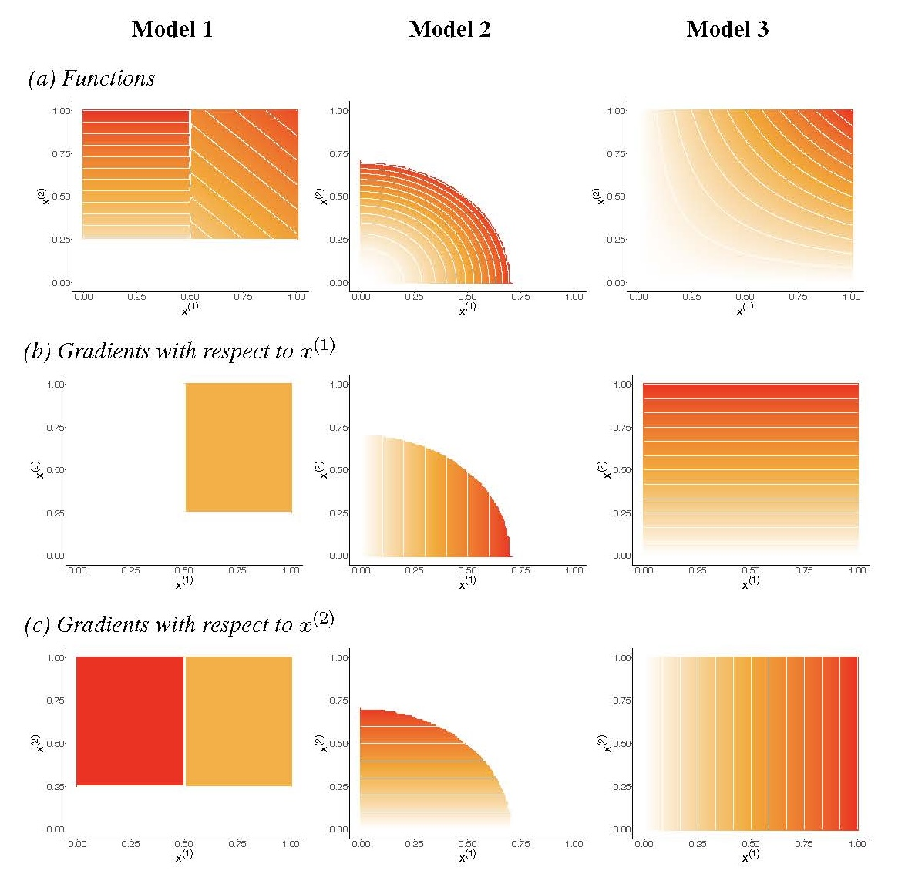
We compare iVarPro to three established methods:
CSRF (Case-Specific Random Forests) importance [2], implemented using the ranger R package [3]
SHAP, computed using the treeshap R package [4]
LIME, computed using the lime R package [5]
Both SHAP and LIME were applied to a trained XGBoost model [6], with hyperparameters selected via cross-validation. We also evaluate three additional versions of iVarPro based on different choices of the external predictor \({\widehat{\psi}}\):
iVarPro-raw: No external model is used; local gradients are estimated directly using the raw response values \(y\)
iVarPro-gbm: The external predictor \({\widehat{\psi}}\) is a gradient tree boosted model fit using the gbm R package [7]
iVarPro-xgb: The external predictor \({\widehat{\psi}}\) is an XGBoost model
Kendall’s \(\tau_b\) scores evaluating the performance of iVarPro and comparison procedures in a synthetic setting. Red error bars denote 95% confidence intervals for the mean, slightly offset to the right for visual clarity
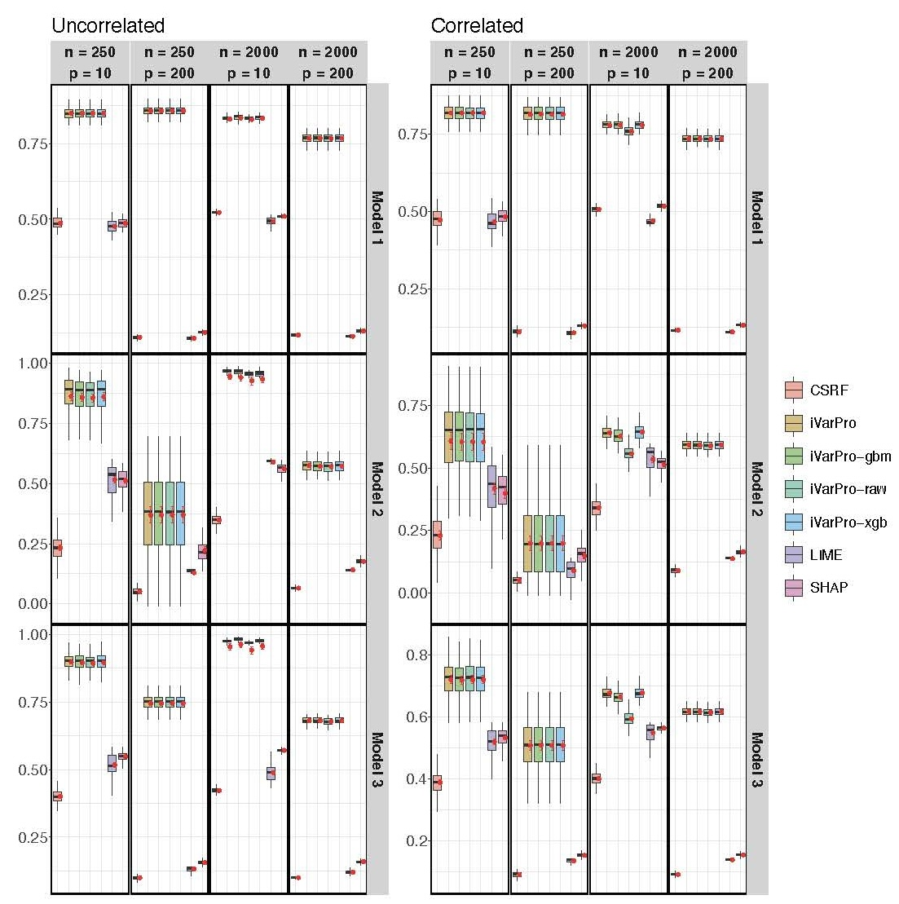
C-index scores evaluating the performance of iVarPro and comparison procedures in a synthetic setting
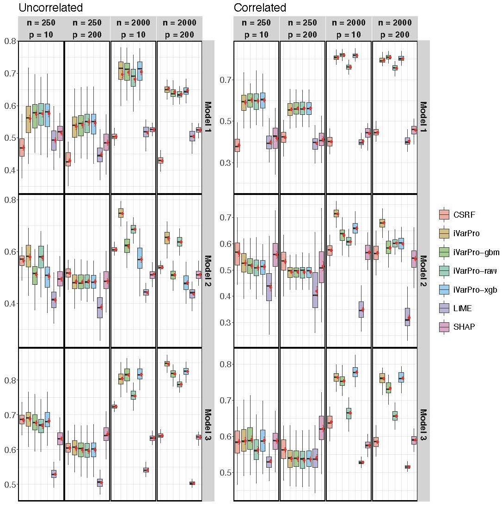
PR-AUC scores 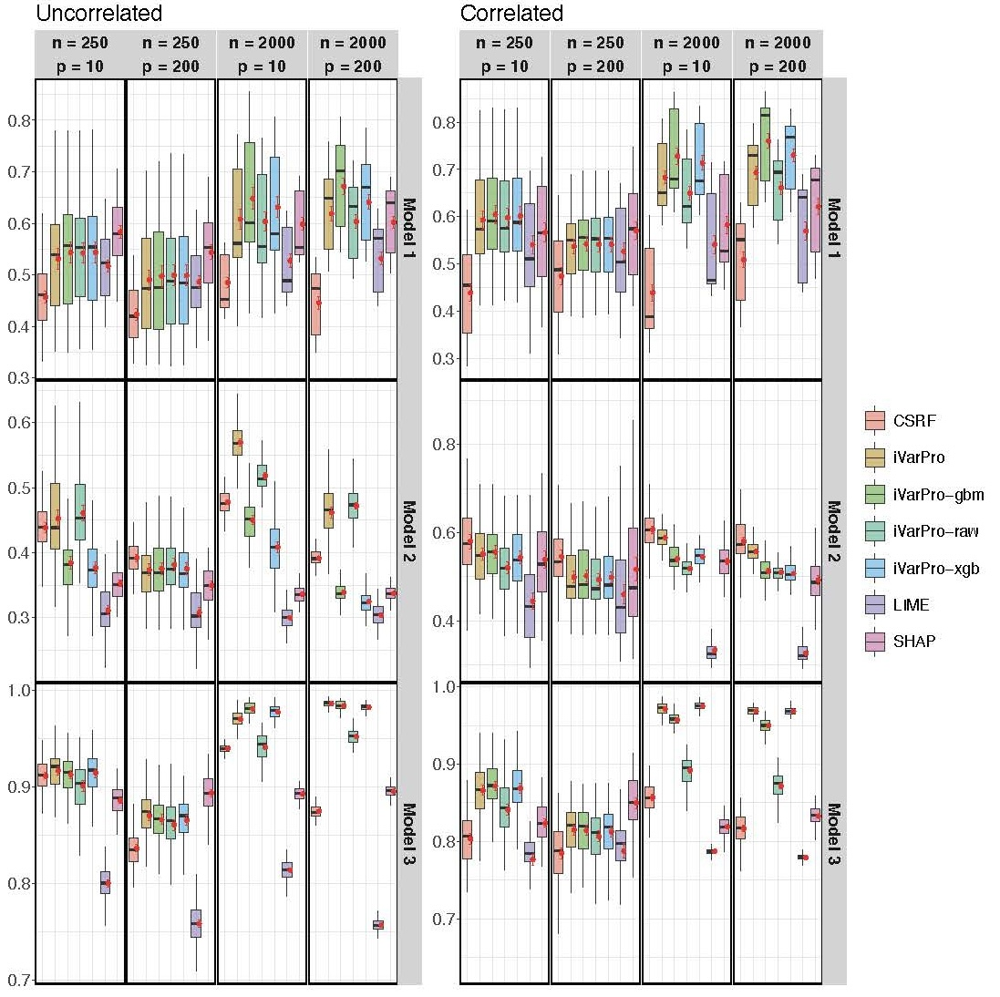
MSE scores 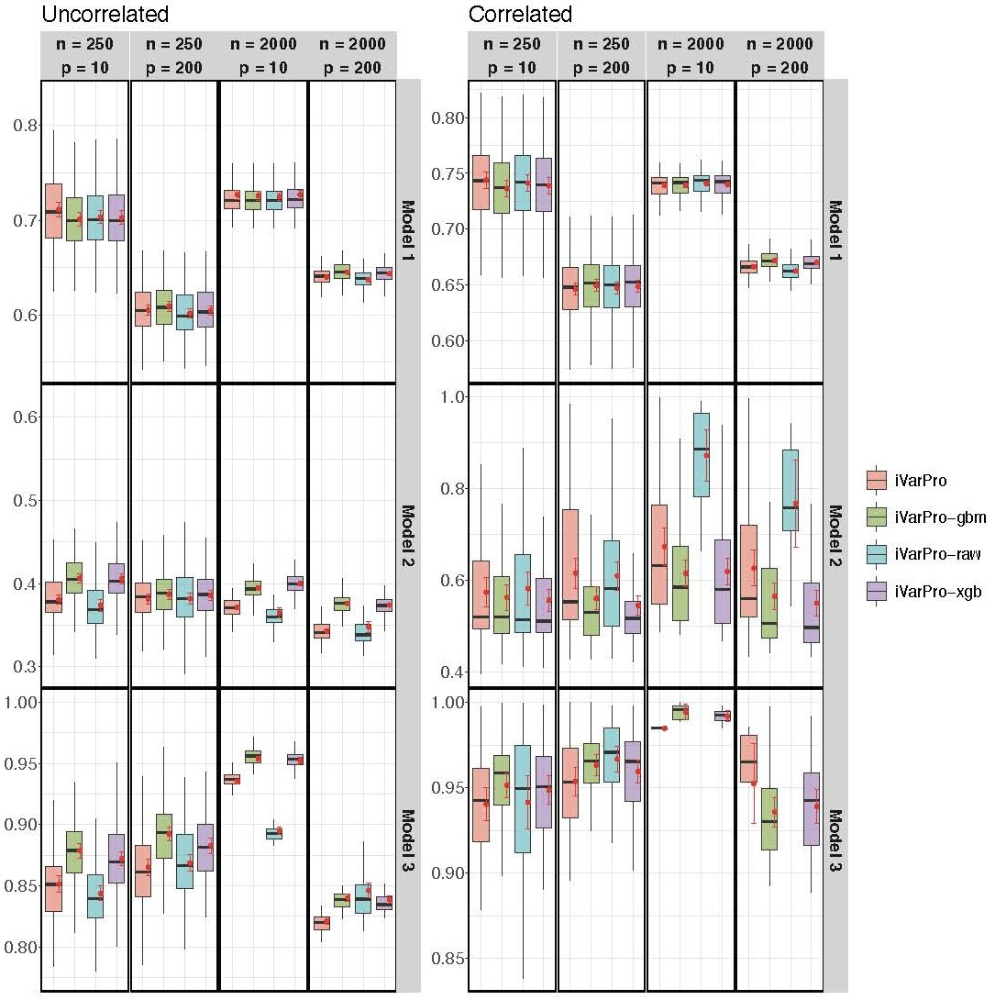
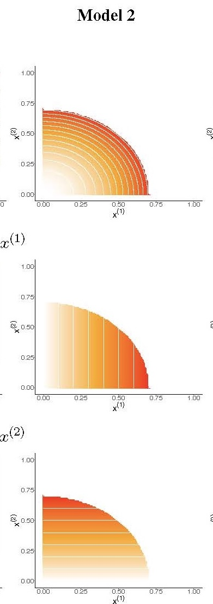
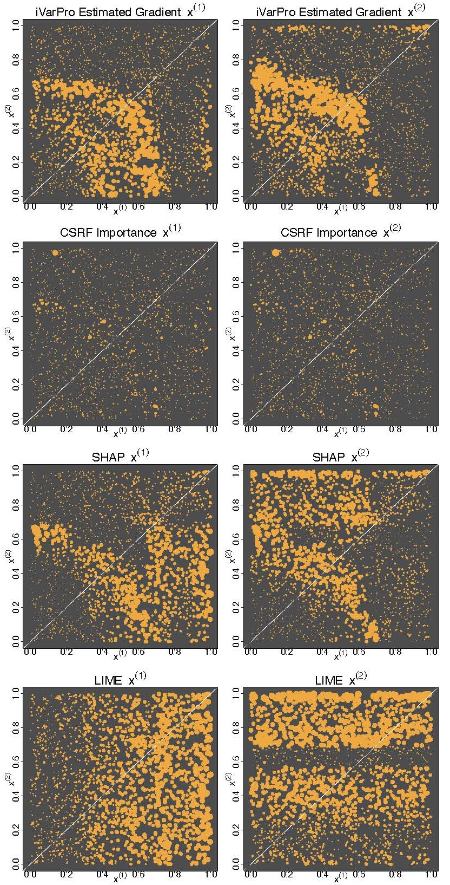
Uncorrelated
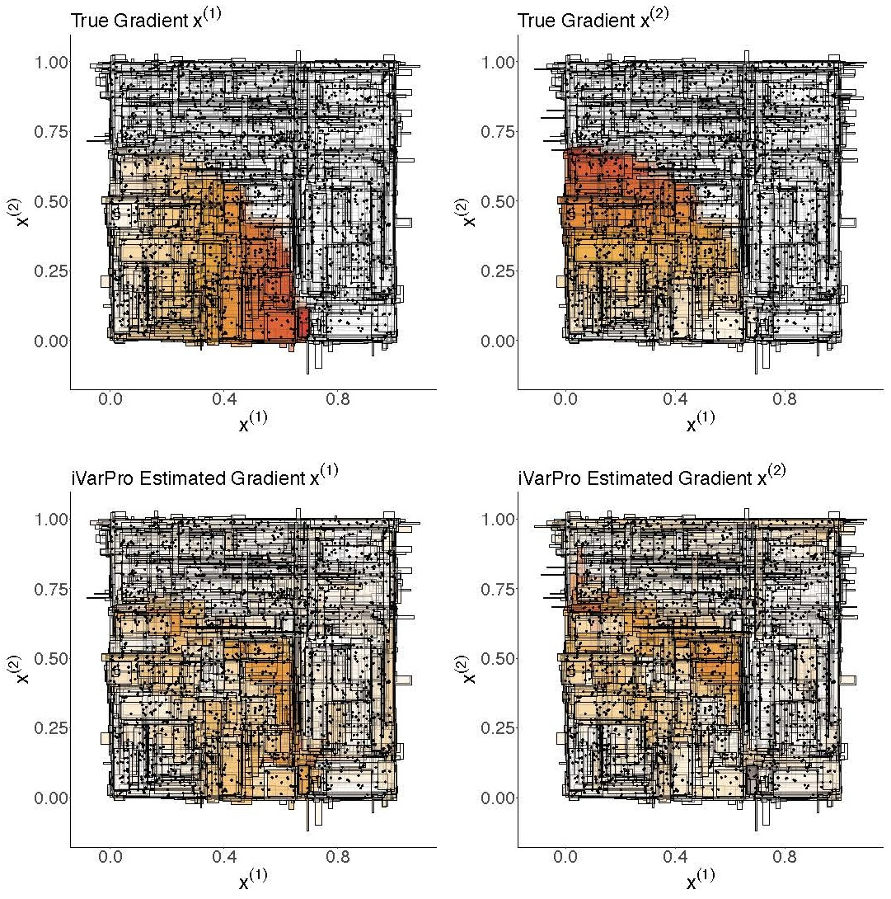
Correlated
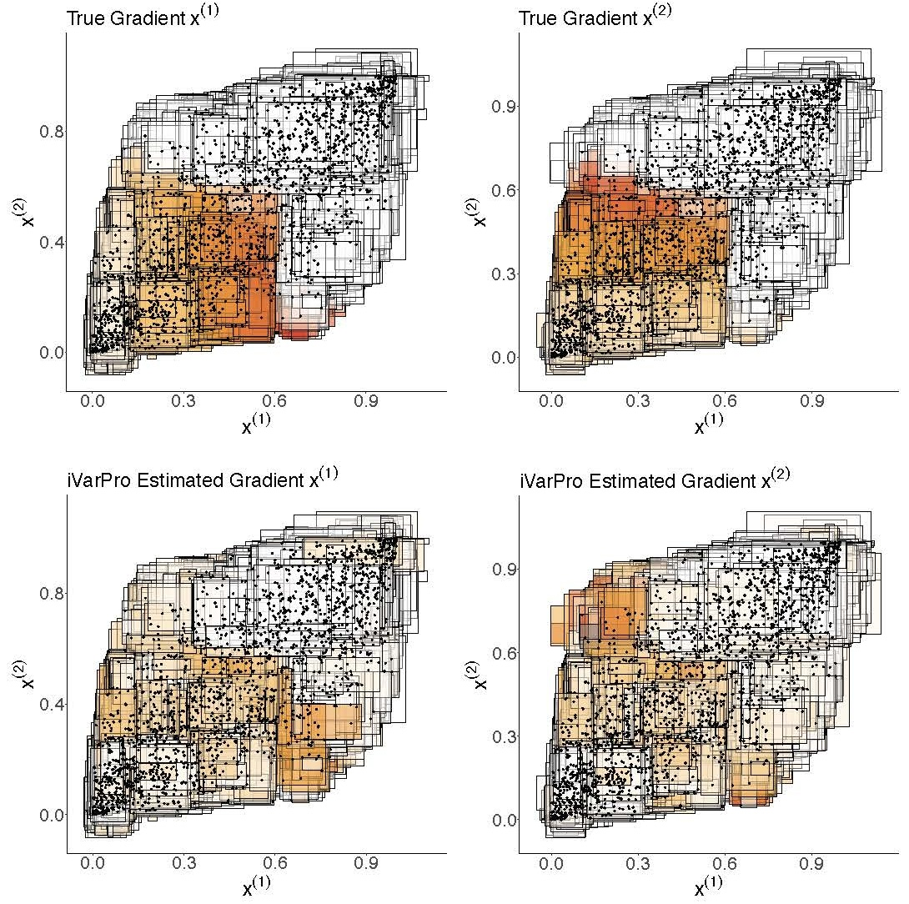
The true (potentially unobserved) survival time:
\[
\def\Xs#1{X^{(#1)}}
\def\x{{\bf x}}
\def\X{{\bf X}}
\def\PP{\mathbb{P}}
\def\xs#1{x^{(#1)}}
{\tiny
T^o = \log
\left[1 + V +
\exp(\sum_{s=1}^4 \beta_s \Xs{s}
+ \beta_5 \Xs{5} 1_{\{\Xs{2} > 0.5\}} ) \right]
}
\] The variable \(\scriptsize V\) follows a standard exponential distribution and the features \(\scriptsize \Xs{s}\) is drawn from Uniform\(\scriptsize (0,1)\). We take \(\scriptsize \psi(\x)\) to be the restricted mean survival time (RMST) [11] up to a specified time horizon \(\scriptsize \tau>0\): \({\tiny \psi(\X) = \int_0^\tau S(t | \X)\,dt,}\) where \({\tiny S(t|\x) = \PP\{T^o > t | \X=\x\}}\)
To derive a closed-form expression for the gradient of \(\scriptsize \psi(\x)\), we have \({\tiny S(t|\x) =\PP\left\{ \log [1 + V + A(\x) ] > t \right\}},\) where \({\tiny A(\x) = \exp (\sum_{s=1}^4 \beta_s \xs{s}}\) \({\tiny+ \beta_5 \xs{5} 1_{\{\xs{2} > 0.5\}})}\)
We obtain the partial derivatives: \[ \def\L{\Lambda} {\tiny \begin{array} \frac{\partial \psi(\x)}{\partial \xs{s}} &=& \beta_s A(\x) e^{A(\x)} \L(\tau), \quad s = 1,2,3,4\\ \frac{\partial \psi(\x)}{\partial \xs{5}} &=& \beta_5 A(\x) e^{A(\x)} \L(\tau) 1_{\{\xs{2} > 0.5\}} \end{array} } \] Parameters were \(\beta_s = 2\) for \(s = 1, \ldots, 5\), and additionally, 15 noise variables were included, resulting in a total of \(p = 20\) features. Random censoring at a 25% rate was applied, and a total of \(n = 2000\) data points were sampled
The true (potentially unobserved) survival time:
\[
\def\Xs#1{X^{(#1)}}
\def\x{{\bf x}}
\def\X{{\bf X}}
\def\PP{\mathbb{P}}
\def\xs#1{x^{(#1)}}
{\tiny
T^o = \log
\left[1 + V +
\exp(\sum_{s=1}^4 \beta_s \Xs{s}
+ \beta_5 \Xs{5} 1_{\{\Xs{2} > 0.5\}} ) \right]
}
\] The variable \(\scriptsize V\) follows a standard exponential distribution and the features \(\scriptsize \Xs{s}\) is drawn from Uniform\(\scriptsize (0,1)\). We take \(\scriptsize \psi(\x)\) to be the restricted mean survival time (RMST) [11] up to a specified time horizon \(\scriptsize \tau>0\): \({\tiny \psi(\X) = \int_0^\tau S(t | \X)\,dt,}\) where \({\tiny S(t|\x) = \PP\{T^o > t | \X=\x\}}\)
To derive a closed-form expression for the gradient of \(\scriptsize \psi(\x)\), we have \({\tiny S(t|\x) =\PP\left\{ \log [1 + V + A(\x) ] > t \right\}},\) where \({\tiny A(\x) = \exp (\sum_{s=1}^4 \beta_s \xs{s}}\) \({\tiny+ \beta_5 \xs{5} 1_{\{\xs{2} > 0.5\}})}\)
We obtain the partial derivatives: \[ \def\L{\Lambda} {\tiny \begin{array} \frac{\partial \psi(\x)}{\partial \xs{s}} &=& \beta_s A(\x) e^{A(\x)} \L(\tau), \quad s = 1,2,3,4\\ \frac{\partial \psi(\x)}{\partial \xs{5}} &=& \beta_5 A(\x) e^{A(\x)} \L(\tau) 1_{\{\xs{2} > 0.5\}} \end{array} } \] The figure below shows the estimated iVarPro values where \(\scriptsize \xs{5}\) has a smaller effect that is modulated by \(\scriptsize \xs{2}\) and influences survival only \(\scriptsize \xs{2} > 0.5\) 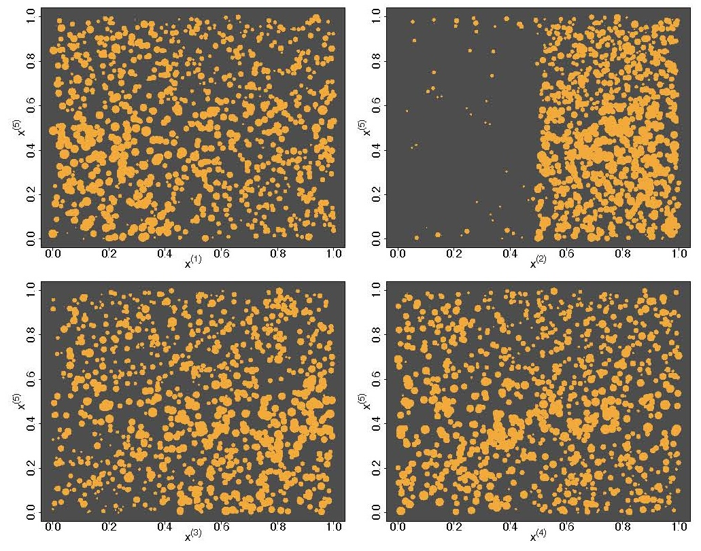
Visualizing clinical variable (Peak METs) versus ECG variable (ST-segment above the baseline)
The top panel scales circle size by the Peak METs gradient, and the bottom panel scales by the ECG gradient. Data are stratified by patient mortality
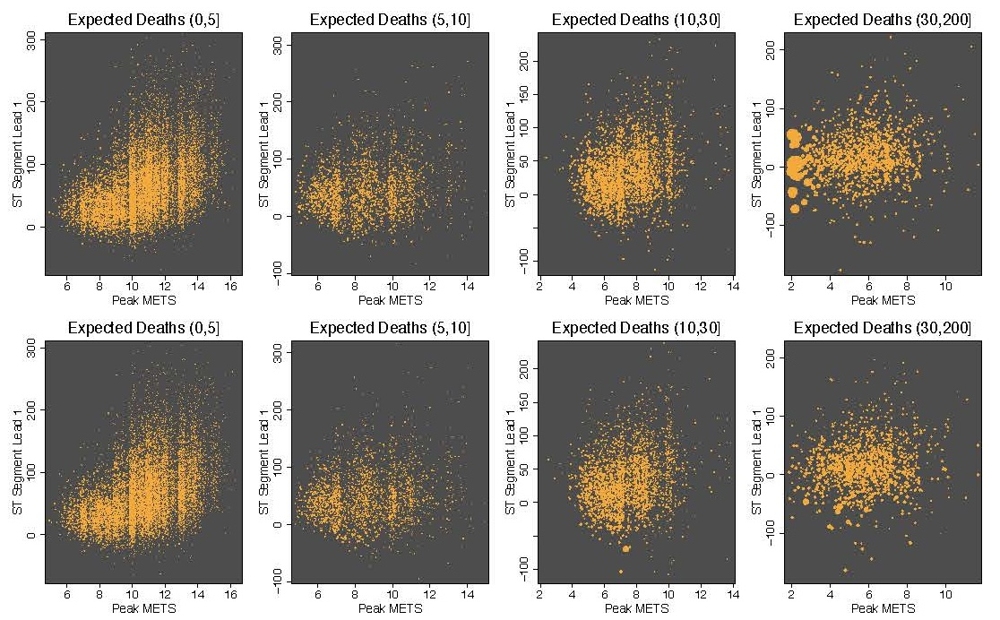
Same as left, but with the vertical axis representing the Duke Treadmill Score (DTS). Circle are scaled to the gradients for Peak METs and DTS, respectively
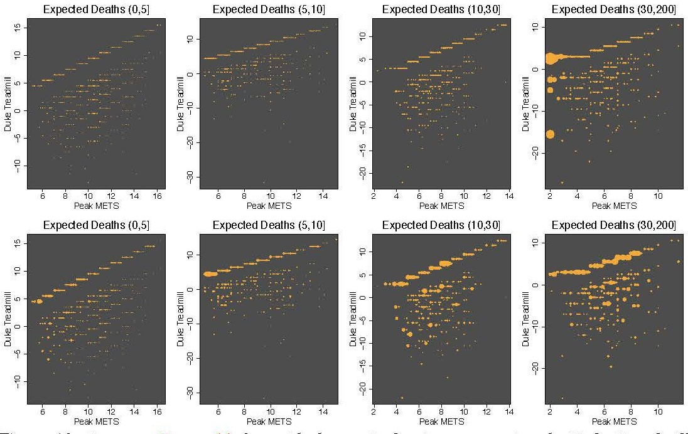
Message: population signals + patient-specific signals → better precision interpretation
Publication: Lu M. and Ishwaran H. (2025). Individual variable priority: A model-independent local gradient method for variable importance. To appear in Artifical Intelligence Review
Thanks!
Questions that change the gradient welcome!